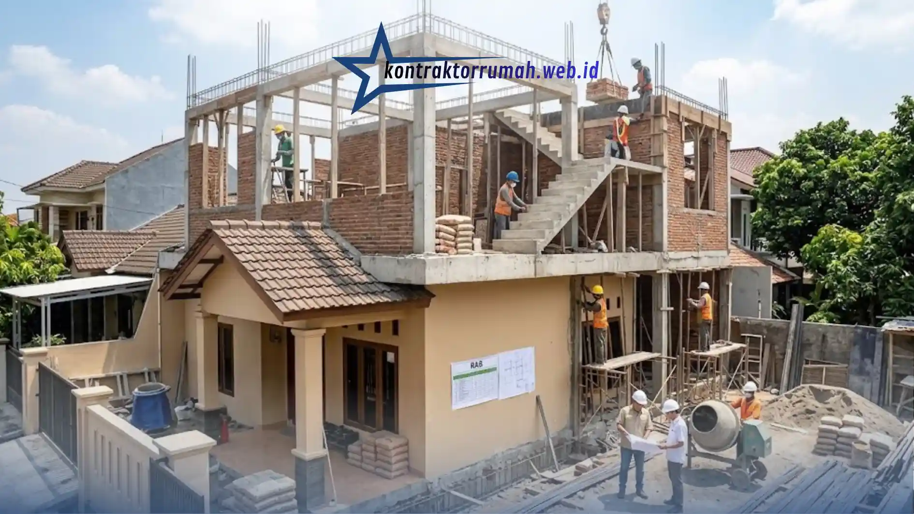

Menambah lantai atau merombak total hunian dua lantai adalah solusi cerdas untuk memaksimalkan lahan terbatas. Namun, tanpa perencanaan finansial yang matang, proyek ini rentan terhenti di tengah jalan atau memakan biaya jauh melebihi ekspektasi. Mengetahui tahapan dan biaya renovasi rumah 2 lantai secara mendetail adalah kunci agar kantong tetap aman dan rumah impian terwujud.
Poin Penting
- Renovasi 2 lantai melewati 5 tahap: perencanaan & desain, fondasi, struktur & dinding, atap & instalasi, dan finishing.
- Perencanaan mencakup jasa arsitek, penyusunan RAB, dan pengurusan izin PBG.
- Perkuatan fondasi adalah tahapan yang paling menguras biaya jika fondasi lama tak kuat menahan lantai dua.
- Borongan penuh berkisar Rp4.000.000–Rp6.000.000 per m²; contoh 40 m² kualitas menengah = Rp200.000.000.
- Siapkan dana darurat 10–15% dari RAB, dahulukan struktur, dan pakai material substitusi.
Tahapan Krusial dalam Renovasi 2 Lantai
Renovasi tingkat bukan sekadar menambah batu bata, tetapi melibatkan proses struktural yang vital:
- Perencanaan & Desain — termasuk biaya jasa arsitek, pembuatan Rencana Anggaran Biaya (RAB), dan pengurusan izin (PBG).
- Pembongkaran & Pembuatan Fondasi — jika fondasi lama tidak kuat menahan beban lantai dua, struktur harus diperkuat (suntik fondasi, cakar ayam, pengecoran dak). Ini adalah tahapan yang paling menguras biaya.
- Pekerjaan Struktur & Dinding — pemasangan bata, pembuatan kolom, ring balok, dan tangga.
- Atap & Instalasi — pembuatan rangka atap baru, pemasangan genteng, serta instalasi pemipaan (plumbing) dan kelistrikan untuk lantai atas.
- Finishing — pemasangan plafon, lantai, pengecatan, hingga detail interior.

Tahap finishing, mulai dari plafon, lantai, pengecatan, hingga detail interior, menjadi penutup renovasi rumah 2 lantai.
Estimasi Biaya dan Cara Menghitung
Sebagai gambaran umum di pasar saat ini, biaya renovasi atau pembangunan lantai dua menggunakan sistem borongan penuh (jasa + material) berkisar antara Rp4.000.000 hingga Rp6.000.000 per meter persegi, tergantung pada kualitas material yang dipilih (standar, menengah, atau mewah).
Contoh perhitungan: menambah luas bangunan sebesar 40 meter persegi dengan kualitas menengah (asumsi Rp5.000.000/m²):
40 m² × Rp5.000.000 = Rp200.000.000
| Komponen | Nilai |
|---|---|
| Tambahan luas bangunan | 40 m² |
| Kualitas material | Menengah |
| Asumsi biaya borongan penuh | Rp5.000.000/m² |
| Estimasi total | Rp200.000.000 |
(Catatan: harga ini adalah estimasi pasar umum dan dapat bervariasi tergantung lokasi, kontraktor, dan kondisi lapangan aktual.)
Strategi Mengamankan Anggaran
- Fokus pada struktur dulu — jika dana terbatas, selesaikan struktur utama, atap, dan fasad terlebih dahulu. Pekerjaan finishing interior bisa dilakukan secara bertahap (konsep rumah tumbuh).
- Gunakan material substitusi — Anda tidak harus menggunakan material mahal untuk semua hal. Misalnya, gunakan baja ringan alih-alih kayu untuk rangka atap, atau lantai vinyl yang secara estetika menarik namun lebih terjangkau dibanding granit premium.
- Siapkan dana darurat (contingency fund) — selalu siapkan dana cadangan sebesar 10% hingga 15% dari total RAB. Biaya tak terduga sering muncul dalam proyek renovasi, seperti pipa lama yang ternyata bocor saat pembongkaran.
Merombak rumah menjadi dua lantai memang membutuhkan modal yang tidak sedikit. Namun, dengan perencanaan RAB yang detail sejak awal dan pengawasan yang ketat, proyek Anda akan berjalan lebih lancar dan terhindar dari pemborosan yang tidak perlu.
FAQ Seputar Biaya Renovasi Rumah 2 Lantai
Dengan memahami tahapan, estimasi biaya, dan strategi mengamankan anggaran, Anda bisa merencanakan renovasi rumah 2 lantai dengan lebih terarah. Tim jasa renovasi bangunan kami siap membantu mulai dari perencanaan hingga pengerjaan.